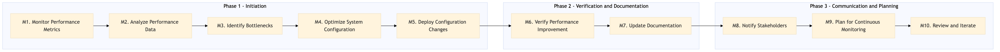

This process document outlines the IT-PF-04 Search Infrastructure Performance Management for Expedia Group (OTA) and Amex GBT / SAP Concur (TMC). It ensures optimal performance of search infrastructure across various systems.
| Trigger | Scheduled monitoring or detection of performance degradation in search infrastructure. |
| Outcome | Achieving and maintaining high availability, low latency, and efficient resource utilization for all integrated systems. |
| Systems | Kafka Snowflake AWS SageMaker Tableau Confluence Jira Email Slack |

Click to enlarge
| Step | Name & Pain Point | Role | System | Input | Output | KPI | Flags |
|---|---|---|---|---|---|---|---|
| 1.1 | Monitor Performance Metrics High latency in Kafka | DevOps Engineer | Kafka, Snowflake, AWS SageMaker | Real-time performance data | Performance report | Response time < 200ms | ⚠ Exception |
| 1.2 | Analyze Performance Data Complex data interpretation | Data Scientist | AWS SageMaker, Tableau | Performance report | Root cause analysis | Accuracy of root cause identification > 90% | ◆ Decision |
| 1.3 | Identify Bottlenecks Multiple system dependencies | DevOps Engineer | Snowflake, Kafka | Root cause analysis | Bottleneck report | Number of identified bottlenecks < 5 | ⚠ Exception |
| 1.4 | Optimize System Configuration Resource allocation challenges | DevOps Engineer | AWS SageMaker, Snowflake | Bottleneck report | Optimized configuration settings | System performance improvement > 20% | ⚠ Exception |
| 1.5 | Deploy Configuration Changes Deployment failures | DevOps Engineer | AWS SageMaker, Snowflake | Optimized configuration settings | Deployment status report | Successful deployment rate > 95% | ⚠ Exception |
| 1.6 | Verify Performance Improvement Inconsistent performance results | DevOps Engineer | Kafka, Snowflake, AWS SageMaker | Deployment status report | Performance verification report | Post-deployment response time < 150ms | ◆ Decision |
| 1.7 | Update Documentation Outdated documentation | DevOps Engineer | Confluence, Jira | Performance verification report | Updated documentation | Documentation accuracy > 90% | ⚠ Exception |
| 1.8 | Notify Stakeholders Communication delays | Project Manager | Email, Slack | Performance verification report | Stakeholder notification | Stakeholder satisfaction > 85% | ⚠ Exception |
| 1.9 | Plan for Continuous Monitoring Resource constraints | DevOps Engineer | Kafka, Snowflake, AWS SageMaker | Performance verification report | Monitoring plan | Continuous monitoring coverage > 95% | ⚠ Exception |
| 1.10 | Review and Iterate Inefficient process flow | Project Manager | Confluence, Jira | Monitoring plan | Process improvement suggestions | Process efficiency improvement > 15% | ◆ Decision |